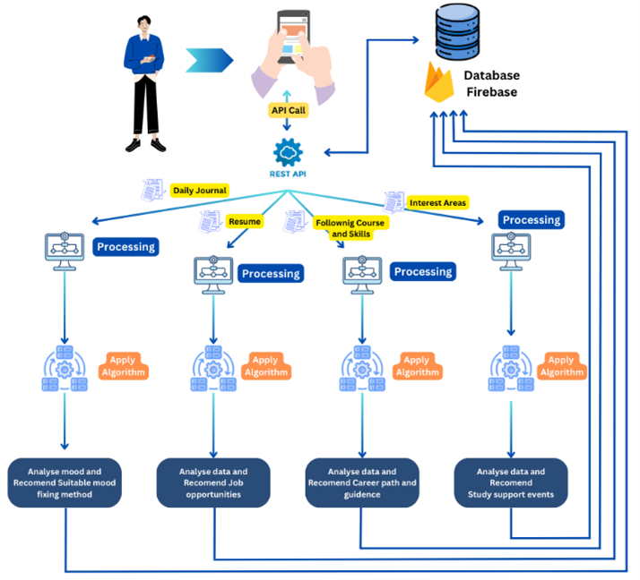

Undergraduate Support System
Welcome to Undergraduate Support System
Solutions to success throughout their academic journey

About our Application
& our services
The Comprehensive Undergraduate assistance System, a state-of-the-art application that uses cutting-edge technologies to provide a single platform for academic assistance, career advice, emotional well-being, and professional growth, is designed and implemented in this thesis. Through the utilization of cutting-edge technologies like Flutter, Dart, Firebase, Natural Language Processing (NLP), and Machine Learning (ML) algorithms, this system seeks to transform undergraduate students' academic journey navigation and empower them to succeed in all sectors of their lives.
Main Objectives
MOOD ASSESSMENT AND EMOTIONAL WELL-BEING
RESUME PARSING AND JOB RECOMMENDATION
CAREER PATH GUIDANCE
STUDY SUPPORT AND RELATED EVENTS
Literature Review, Research Gap
Methodology & System Overview Diagram
Literature Review
This review explores existing research and applications, highlighting the contributions and limitations of current approaches, and identifying gaps that the Comprehensive Undergraduate Support System – ‘Oasis’ aims to address.
A. Discussion of Previous Work in Similar Domains
Educational technology landscape has seen major developments in the past decade, with researchers and developers exploring numerous approaches to improve the student learning experience and their general well-being. Technology has been integrated into student support services, especially mobile applications, which target a variety of student needs, such as their emotional state, career counseling, and academic involvement. This section provides an overview of previous work, identifying the contributions that have informed the development of Oasis.
Supporting students mental well-being has been one of the focal areas of educational research. Some researchers have looked into the use of mobile applications in mental health monitoring and intervention. Most of these applications usually utilize different self-assessment questionnaires and mood tracking features to detect possible mental health problems and give users appropriate coping mechanisms or referral. Nonetheless, most of the current applications are limited by their use of self-reported data and lack of a more detailed analysis of the users’ self-reported Natural Language (NL) inputs that can provide more profound insights into the users’ mood. There are many researches done in different domains that utilize NL input analysis techniques to identify the meaning behind the text.
Technology has enabled new applications in multiple fields that could automate personalized recommendations to users. In career guidance related research, several studies have used machine learning (ML) approaches in order to recommend suitable jobs by matching job seekers’ profiles with suitable job vacancies. These systems use NLP and ML algorithms to analyze resumes with job descriptions thus identifying possible matches. Although successful in providing job suggestions, they offer them job options of what they are already suitable. Existing systems do not offer recommendations of other possible jobs available in the industry that matches with their major and interests for which they could target.
Improving academic engagement as well as out-of-curriculum academic involvement is important specially for undergraduates. There are several systems that focus on improving academic engagement of students. Learning materials are now available on platforms such as Coursera offering a variety of courses and resources to the students. Also there are systems that can predict student performance and suggest personalized course recommendations. However, as these platforms make a big impact in recommending personalized learning environments, there is a gap in combining study support with the professional world. Specially the undergraduates should be given exposure to real-world professionals in the industries of their respective domains.
B. Gap Analysis in Existing Undergraduate Support Systems
Investigation of existing SSS uncovered that many researchers strive to improve student life in multiple aspects such as study support, mental health services, and career counseling. However, an in-depth analysis reveals that the existing systems are not able to offer the necessary integrated, holistic approach that would cover the various needs of students. This gap analysis identifies some critical areas where the existing systems are underperforming as listed below which stresses the need for a more harmonized solution.
1] Fragmentation of Services:
One of the major gaps is the dispersal of support services. The current systems are often siloed, with separate services being offered for emotional wellness, career counselling, and academic support. This gap can result in redundant and awkwardness of students who have to deal with several platforms just to get what they need. The absence of a central platform may lead to under-provision of support to students who could miss out on critical aspects of their development or may face barriers in accessing available resources.
2] Unavailability of Personalized career councelling:
Career services usually address resume construction and job placement, whereas academic services are oriented to selection of a major and academic performance. In career counceling fares conducted by HEI they try to fit the students to their available vacancies but it would not be the best match for the student. The gap between the academic curriculum and the selection of a career option leaves students to bridge it by themselves. Another important gap is that the existing support systems have not given importance to present other inspiring job possibilities in their respective study domain that could be targeted if necessary skills are aquired. Career awareness and prepardness is of much importance to the undergarduates due to the high job demand at present. Also it helps them to identify their current job placement status and also awareness of other job opportunities available based on their major and interests so that they have enough time to prepare and achive their dream job.
3] Inadequate Proactive Support for Mental Well-being:
Though the traditional on-site counselling services are very important, it is possible some students may not be able to get or may be reluctant to use them. And even though there are many systems available to provide mental health services, the support is approached in a reactive rather than a proactive manner. There are no continuous engagement tools that track students mood over time and offer early intervention. And most systems available utilize self-assessment questionnaires to identify issues and lacks the use of self-reported data for the purpose.
4] Insufficient use of Technology and Service Accessibility:
Technology utilization in undergraduate support systems is inefficient. The increasing prevalence of smartphones and the availability of internet access make mobile applications a powerful instrument for rendering support services to students. But many current systems increasingly fail to utilize this potential. This gap of technology highlights the chance to use mobile platform with relevant technology stack for consistent, available, and integrated support. The Oasis is designed to overcome these shortcomings by providing an integrated system that is accessible anywhere and anytime and equipped with the latest technology to gain full potential of the system.
Research Gap
Further investigation of existing undergraduate support systems reveals a landscape teeming with programs that strive to improve student life in multiple aspects, such as academic support, mental health services, and career counseling. However, an in-depth analysis unveils significant gaps and limitations within these existing systems, highlighting the need for a more comprehensive and integrated approach.
One of the key issues identified is the fragmentation of services, where students must navigate through a maze of separate resources and programs, each addressing a specific need. This lack of cohesion not only creates confusion but also fails to provide a holistic understanding of the interconnected nature of academic, personal, and professional development.
Additionally, these existing systems often fall short in offering personalized support tailored to the unique needs and circumstances of each student. A one-size-fits-all approach neglects the diverse backgrounds, learning styles, and aspirations of the student population, potentially hindering their ability to thrive and reach their full potential.
Another critical gap lies in the insufficient integration of career and academic guidance. While many programs provide academic support and career counseling separately, there is a lack of seamless integration between these two crucial components. This disconnect fails to acknowledge the intrinsic link between academic pursuits and future career paths, leaving students ill-equipped to navigate the transition from academic life to professional endeavors.
Furthermore, the inadequate support for emotional well-being is a pressing concern. Mental health plays a pivotal role in academic success and personal growth, yet many existing systems do not prioritize or effectively address this crucial aspect of student life. Lastly, technological integration and accessibility issues pose significant barriers. In an increasingly digital age, the lack of a unified platform or inconsistent accessibility across various services can hinder students' ability to access the support they need, exacerbating existing challenges.
To address these gaps and limitations, the Comprehensive Undergraduate Support System (CUSS) aims to provide a holistic support framework that seamlessly integrates emotional wellness services, career advice, and academic involvement into a cohesive platform. By leveraging advanced sentiment analysis and machine learning algorithms, CUSS offers personalized career guidance tailored to each student's unique strengths, interests, and aspirations.
Furthermore, CUSS incorporates tailored academic support, leveraging data-driven insights and adaptive learning technologies to enhance the educational experience. By addressing the critical need for emotional well-being, CUSS provides accessible mental health resources and support, fostering a nurturing environment that promotes personal growth and resilience.
Through its comprehensive and integrated approach, CUSS seeks to revolutionize the undergraduate support landscape, empowering students to navigate their academic journey with confidence, cultivate their personal and professional development, and ultimately thrive in their chosen paths.
Methodology
At the beginning several consultations are done with the stakeholders of the proposed system, such as students, academic advisers, and career counselors, with the intension of understanding and getting familiar with key features and requirements for such a system. A user-responsive design of the Oasis as given in Figure 01 is realized through modern advanced technologies to meet the diverse requirements of students, fostering their emotional, academic, and professional growth. The following sections detail the architecture of the system and the design of its components highlighting the selection of the technologies.
A. Mobile Application Architecture
1] The architecture of the mobile application has been developed for it to be scalable, modular, and user-friendly, which guarantees that students can access the full range of support services effortlessly. The application is built on a client-server model with a mobile app serving as the client interface for user interaction and backend server handling data processing, analysis, and content management.
• Client-Side (Mobile Application): The client-side is implemented in Flutter, the widely known open-source UI software development kit developed by Google. From a single codebase, flutter enables the development of natively compiled mobile applications, providing a fast pace and excellent user experience for both iOS and Android platforms. Dart, which is the language of Flutter, has a clear syntax and a powerful set of libraries, which can be used for developing more complicated features.
• Server-Side (Backend Services): The backend services are based on Firebase, a mobile and web application development platform that offers a set of cloud services such as a real-time database, authentication, and hosting. Firebase gives the system capability to securely handle user information, perform the data processing and render custom content to users as it happens. The scalable cloud database can be used to store various student data such as diary entries, resumes, and personal profiles.
• Communication: The client and server talk using RESTful APIs, which guarantees secure and efficient data communication. This configuration allows the live generation of the application content, interactive user responses, and the embedding of ML models for data processing.

B. High-Level Design of the proactive support for mental Well-being
1] User Interaction and Data Collection
Upon launching the Daily Diary tool, users are welcomed by a visible, simple interface that helps them to reflect on their day. The app comprises subtle alerts and inspirational texts that encourage users to stick to diary habits consistently, with the goal of ensuring constant mental health monitoring. The app tries to support an adequate rate of user interaction through gamification methods, such as streaks and badges, rewarding users for every consecutive day of filling in diary entries.
2] Sentiment Analysis Using the Roberta Model
In the sphere of mood detection from diary entries, sentiment analysis is one of the key methods in NLP that supports identification of sentiment of written text and contextual relevancy.
RoBERTa (Robustly Optimized BERT Pretraining Approach) model has a better understanding of the text context, which is useful for the diary analysis. RoBERTa enhances BERT's performance through optimizing essential hyperparameters, using larger batches in training, and removing the sentence pair prediction criterion, so it could focus on more to the point and wide-ranged masking during training. This in turn leads to a model that can better mimic spoken language, it is thus a model that can capture the fine intricacies of language making it the ideal choice for the task of sentiment analysis.
For sentiment analysis in connection with the personal diary relevance, moreover, RoBERTa provides advanced understanding of context and the capability to grasp fine nuances of linguistic expressions. This ability is critical in terms of identifying the sentiment of the diaries, especially when users may describe their emotions in various and complicated ways.
The most important reason that RoBERTa was chosen for mood assessment feature is just that it is extremely good at text processing being better in terms of precision. This allows the system to group text accurately into the most specific sentiment categories, identifying the message conveyed through written form to the deepest level of human feelings thus offering deeper insights into diary entries.
3] Implementation Using Transformer Library and PyTorch
The usage of the RoBERTa model for sentiment analysis in Oasis has the pleasure of relying on PyTorch and Transformer library, a powerful couple that can be used for NLP activities. The Transformer library offers ready-made models such as RoBERTa that developers can use with virtually no effort; as a result, project timelines are shortened, and complex aspects of NLP, such as model creation, are eliminated. PyTorch, which is used for building, training, and testing models, has become an important framework of choice due to its high flexibility and scalability.
The first step that is adopted by the developers to incorporate RoBERTa is using the Transformer framework to load the pre-trained model. PyTorch's adaptable computation diagram enables simple adjustment of the model to the traits of diary entries for sentiment analysis. This can be realized through the fine-tuning of a model specifically prepared for emotional text and it can be done by selecting dataset that contains very different sentiments expressed in student diary.
One the students have shared the experiences through the diary record, it forwards the text to the server application through a secure API. The server, on the back of PyTorch, with the RoBERTa model in place, evaluates the sentiment, and then the application receives the sentiment classification from the server. Firebase acts as a database that can save and retrieve information of the users’ entries, and make sentiment analysis results available in real time, therefore users will enjoy getting feedback and recommendations within a short time interval as well as their emotional status.
C. High-Level Design of the Job Recommendation based on resume data
1] Resume Parsing Techniques and Job Recommendation Logic
• Resume Parsing Techniques: The parsing of resumes involves the extraction of critical information from resumes that are usually unstructured. Modern resume parsers use methods of NLP and ML to perceive required patterns, context, and entities in resumes. There are approaches like the Named Entity Recognition (NER) which provides the ability to categorize the pieces of text for predefined groups (for example, names, organizations, skills).
• Job Recommendation Logic: The processed information which is then structured is run through a job description matching algorithm to populate candidates' profiles with relevant job recommendations. Performing this task is narrowed down to looking through job adverts to obtain data consisting of major, skills, experience, and educational qualifications required by a specific job. The score provided by automated skills matching algorithms often matches the skills of the job to the candidate when using a similarity scoring algorithm that compares job requirements to the candidate's profile.
2] Implementation considerations
• Data Preprocessing: One of the key steps in the execution process is to carefully prepare representative data sets from resumes. This phase has the biggest impact regarding the transformation process: paper's textual information must be asked to take a form that can be understood by algorithms. Pre-processing is an important task, which includes among others the removal of irrelevant symbols and whitespace. Without this acting, the outcome of the research could be skewed. On top of that, tokenization divides the document into smaller parts, usually tokens, making it possible to have a low-level scrutiny. Part of speech tagging attributes grammatical functions to each token. Therefore, it provides a way to understand the text more deeply and precisely, since semantic extraction often depends on it.
• Training the NER Model: The key to the model is a NER (Named Entity Recognition) module, trained to be accurate after manually labeling specific entities present in datasets. This model is crucial for noticing what data could be extracted from the resumes and then providing that data. spaCy is very useful here in that NER stands out having an outstanding impact on an effective way of building custom models. Such efficiency comes from the fact that spaCy is optimized for real-world application deployment implying it becomes the most sought-after tool by developers who want to implement the state-of-the-art NLP with minimum resource efficiency.
D. High-Level Design of the Career Path Guidance
1] Understanding User Needs and Inputs
It is necessary to clearly identify the attributes needed for personalization. It is the data that has a lot of variances from one student to another. Identified attributes include the students major, academic interests and skills. It might seem quite ordinary, but each of the gathered statistics has a very important role when it comes to generating the individual career advice suggested by the system.
• Major/Course: Students' major or selected course reflects what they are naturally attracted to, revealing innate abilities and predispositions. Such data is helpful in building the momentum towards the identification of the possible industries and job roles that embody the students' preferences.
• Academic Interests: Considering student dreams and academic aspirations (preference for programming, technical writing, computer networking, etc.) is very important to identifying the best career path that is realistic and best suited.
• Skills: Students already acquired skills can be used to identify the best suited job while taking advantage of the existing skills to the maximum.
2] Implementation of Career Path Guidance Using Paraphrase-MiniLM-L6-V2
The process starts with the formatting of the input data to be fed into the system in a format that is suitable for further analysis. This involves standardizing the data from the student profiles and career descriptions. After providing the formatted input, the paraphrase-minilm-l6-v2 model is ready for processing. This step produces vector representations of both a job seeker’s qualifications and the requirements of various career paths. These vectors grasp the semantic structure of the text and enable insight beyond pure surface-level matches based on word presence.
The system then leverages similarity metrics to match these vectors, discovering respective job descriptions which have the highest semantic similarity to the student profile. Even if the exact correspondences are not used in both texts, the semantic similarity between the descriptions is still displayed. This implementation is empowering the system to offer very comprehensive, accurate, and customized career guidance.
E. High-Level Design of the Academic Related Event recommendation
1] Understanding User Attributes
The key feature of the recommendation process involves understanding whether an available event is relevant to a student profile. Understanding the proper attributes to recommend the related events is crucial here. The attributes considered for this are student major, academic interests, and the distance to the event location.
2] Data Loading and Preprocessing with Pandas
Pandas, a robust python software for data manipulation and analysis, is used. The library's broad array of functionalities enables clean, thorough loading, as well as preparative processes, set up which is a prerequisite for a successful delivery of personalized learning and event recommendations.
Event details are extracted from different sources like databases or APIs that provide us with info on workshops, lectures, and conferences. Once student profile data and event data are fed into the systems, pandas are used to convert all these unstructured data to data frame format enabling advanced operations on the datasets with ease.
Data cleaning at this stage also starts with ending duplicates, managing missing values, and fixing gaps and errors in data. Panda provides a comprehensive functional support for the procedure of cleaning and verification which avoids data problems and makes the dataset more accurate. Additionally, data transforming using pandas is an effort to convert raw data into an understandable form that is beneficial for analysis. Such a process could create columns from existing data based on event classification based on attributes considered.
Data loading and preprocessing functionality of pandas not only serves to speed up the workflow but also greatly improves the system's recognition of user interests and connecting the users with similar events. A system through which pandas are employed for this vital assignment is a system that promotes the quality of data that is fed directly into the recommendation algorithms so the correct and well-tailored event recommendations.
3] Implementing Random Forest Classifier
The Random Forest (RF) classifier, which is an influential ensemble learning technique, is selected because of its unparalleled capabilities of dealing with complex datasets and producing accurate decisions. The foregoing classifier works by building several decision trees during the training phase and then selecting the most frequent class out of patterns classification by the mode of classes or regression by mean predictions. RF realizes lowering the risk for overfitting that occurs with single decision tree due to it distributing the multiple predictions, which in turn increase the reliability level of the recommended decisions.
RF classifier is based upon the vectors of the parameters retrieved from the student profiles and event data to identify patterns and correlations. The consideration of input variables can predict which new events are most favorable to each student. The advantage of the RF model is its ability to handle the anomaly and variations in data, and recommending the best options based on available data.
4] Integration with Sci-kit Learn for Model Development
The classifier is facilitated by sci-kit learn, a python library for machine learning with wide adoption. With a handy intuitive interface, model development is of course made available, from feature extraction and model instantiation to fitting the model with training set and using the model to make predictions on the new, untried data. Scikit-learn extensibility by connecting its routines with some python libraries (such as Pandas for data manipulation) makes it more powerful. Sci-kit Learn through the system makes the machine useful in implementing the RF classifier which gives reliant and adaptations recommendations for student to attend academic events.
F. Implementation Method
The development of Oasis is planned in Sprint fashion with Agile methodology. To incorporate real-time feedback and adjustments, the development process for this system is Incremental method. Therefore, the system is expected to cater to user needs satisfactorily. Development is done in stages adhering to the Modularity of system design, meaning the system is planned to be developed as separate components which then is integrated into a whole. The use of git (version control tool) made the programming efficient and a way through which the team could collaborate conveniently.